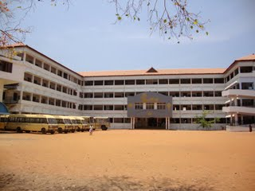

| The School where I entered as a toddler and came out as a major. The confusion of what I learnt these 14 years ached till I saw the outside world which made me recognize the failure to understand the basic values that I learnt here. I dreamt as a child by motivation of teachers to introspect within myself so as to continuously keep improving and to inspire others into making a difference. My education so far has instilled in me the motivation to stay firm in my belief - a trait which lend credence to my dreams |  |
MARKS | ||
| 10th AISSE 2008 | 91.2% Mathematics-100 Science-99 |
|
| 12th AISSCE 2010 | 89.0% |
|